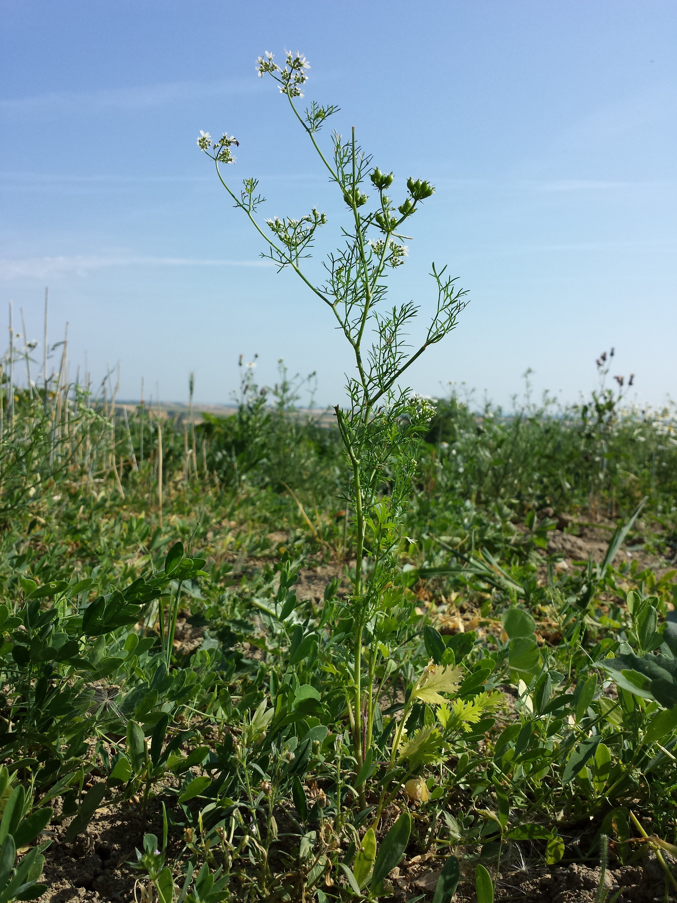

Coriandrum sativum
| common name | coriander, cilantro | |
| en español | coriandro, cilantro | |
| name in Āyurveda | dhānyaka (धान्यक) | |
| name in TCM | yánsuī (芫荽) | |
| plant family | Apiaceae (celery/carrot/parsley) | |
| parts used | dried seeds, fresh and dried leaves/stalks |
 from Wikimedia Commons by Stefan.lefnaer, CC BY-SA 4.0
{kind=link}
observations/description
dried seeds
- spherical golden brown seeds with slight meridian striations
- bouyant, nutty aroma
"Coriander", Wikipedia
- leaves are variable in shape, broadly lobed at the base of the plant, and slender and feathery higher on the flowering stems
- flowers are borne in small umbels, white or very pale pink, asymmetrical, with the petals pointing away from the centre of the umbel longer than those pointing toward it
- fruit is a globular, dry schizocarp
distribution/conservation status
"Coriander", Wikipedia
- native to the Mediterranean Basin
- grows wild over a wide area of Western Asia and Southern Europe, making it difficult to define where the plant is native and where it was only recently established
- recent works suggest that wild coriander in Palestine and Portugal might be an ancestor of cultivated coriander
- cultivated around the world
- large-fruited types are grown mainly by tropical and subtropical countries, such as Morocco, India, and Australia, and contain a low volatile oil content
- used for grinding and blending purposes in the spice trade
- types with smaller fruit are produced in temperate regions and usually have a higher volatile oil content
- highly valued as a raw material for the preparation of essential oil
- large-fruited types are grown mainly by tropical and subtropical countries, such as Morocco, India, and Australia, and contain a low volatile oil content
primary actions
The Modern Herbal Dispensatory, p. 211
- carminative, chelating, condiment
The Yoga of Herbs, p. 114
- alterative, diaphoretic, diuretic, carminative, digestive stimulant, harmonizer
The New Age Herbalist, p. 120
- carminative, digestive stimulant
system affinities
digestive
primary uses
The Modern Herbal Dispensatory, p. 211
- popular culinary herb
- used to detox the body
- one study by Dr. Yoshiaki Omura showed that coriander can reduce heavy metals when taken 4 times daily for 2 weeks, but later studies did not confirm this
- related to chelating action
- seeds used as a carminative and digestive aid
The Yoga of Herbs, p. 114
- good remedy for many pitta disorders of the digestive or urinary tracts
- effective digestive agent for pitta conditions where most spices are contraindicated
- fresh juice of the herb is used internally for allergies, hay fever, and skin rashes
- can also be used externally for itch/inflammation
- increases digestion and absorption, good for dysentery and diarrhea
- with cumin and fennel seeds for digestive disorders owing to high pitta
- these three also used in other digestive formulations to promote the assimilation of other herbs
The New Age Herbalist, p. 120
- good for the digestive system, reducing flatulence
- stimulates the appetite, aiding the secretion of gastric juices
energetics
The Modern Herbal Dispensatory, p. 211
- cooling, drying
The Yoga of Herbs, p. 114
- tridoṣic
- bitter/pungent taste - pungent post-digestive effect
- cooling
pharmacology
The New Age Herbalist, p. 120
- volatile oil containing coriandrol and pinene
contraindications/pharmaceutical interactions/warnings
The Modern Herbal Dispensatory, p. 211
- no known warnings
The Yoga of Herbs, p. 114
- high vāta conditions with nerve tissue deficiency
preparations
The Modern Herbal Dispensatory, p. 211
- standard infusion
- dried leaf or seed, 30 g: 1 L
- tincture
- fresh leaf, 1:2, 95% alcohol
- dried leaf, 1:5, 50% alcohol
- glycerite
- dried seed, 1:5, sealed simmer method
Herbal Materia Medica, p. 14
- tincture
- (dried) seed, 1:5, 65% alcohol
The Yoga of Herbs, p. 79, 114
- hot infusion
- fresh herb/dried seeds, 1:4 (strong)
- fresh herb/dried seeds, 1:8 (moderate)
- cold infusion
- fresh herb/dried seeds, 1:4 (strong)
- fresh herb/dried seeds, 1:8 (moderate)
- powder
- juice
dosage
The Modern Herbal Dispensatory, p. 211
- standard infusion: 2-8 oz, up to 3/day
- tincture: 10 drops to 3 mL, up to 3/day
- glycerite: 1-5 mL, up to 3/day
Herbal Materia Medica, p. 14
- tincture: 10-20 drops
The Yoga of Herbs, p. 92, 114
- hot infusion: 2 oz, 3/day
- cold infusion: 2 oz, 3/day
- powder: 250-500 mg, 3/day
extra information
personal experiences/simples
tisane (1.5 tsp: 12 oz, 15 mins), dried seeds
- delightful sweet aroma, a bit floury, reminiscent of an almond flower cookie dough or a biscotti
- it tastes like biscotti
- fruit (dried apricot), not chocolate
- body is quite watery with slight sweetness, almost all high notes
- sweet aftertaste
decoction (8 g: 16 oz, 30 mins), dried seeds
- really gorgeous smell of light almond/biscotti
- other notes as well, fainter and after the initial biscotti, maybe lemon
- gently invigorating aroma
- deep dark yellow/amber color
- for all of the sweet/almondy/biscotti aroma, the taste is much lighter and much closer to coriander/cilantro flavor i'm used to from culinary uses
- nutty, pungent, lemony; tastes like... well, coriander seeds
- coriander stems as well
- when i use the seeds culinarily i am almost always extracting the flavor in fat (oil or ghee), interesting to smell/taste that the flavors that extract in water are quite different
- almondy/biscotti flavors still do come through, but more in the aftertaste
- getting a slightly alkaline/tannic/astringent mouthfeel; drying energy
- activating stomach to navel axis
witchcraft
The Witch's Encyclopedia of Magical Plants, p. 86-7
- associated with immortality in China
- Egyptians placed it in tombs
- regarded as an aphrodisiac and was used in love potions
- used to conjure spirits
- used as charms against witches, evil spirits, demons, jinn
- cultivated by the mountain faeries of northern Pakistan
- elements: fire
- astrological influence: aries, leo, mars, saturn, venus
recipes
sources
"Coriander" on Wikipedia. Retrieved 7 May 2025.
Easely, Thomas and Steven Horne. The Modern Herbal Dispensatory (2016)
Frawley, David and Vasant Lad. The Yoga of Herbs: An Ayurvedic Guide to Herbal Medicine (1986)
Goldberg Blackthorn, Samantha. Ace of Cups Herbal Medicine and Botanical Magic Herbal School (2024)
Kynes, Sandra. The Witch's Encyclopedia of Magical Plants (2024)
Mabey, Richard et al. The New Age Herbalist (1988)
Moore, Michael. Herbal Materia Medica, Fifth Edition (1995)